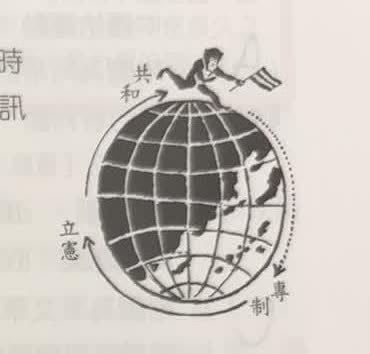
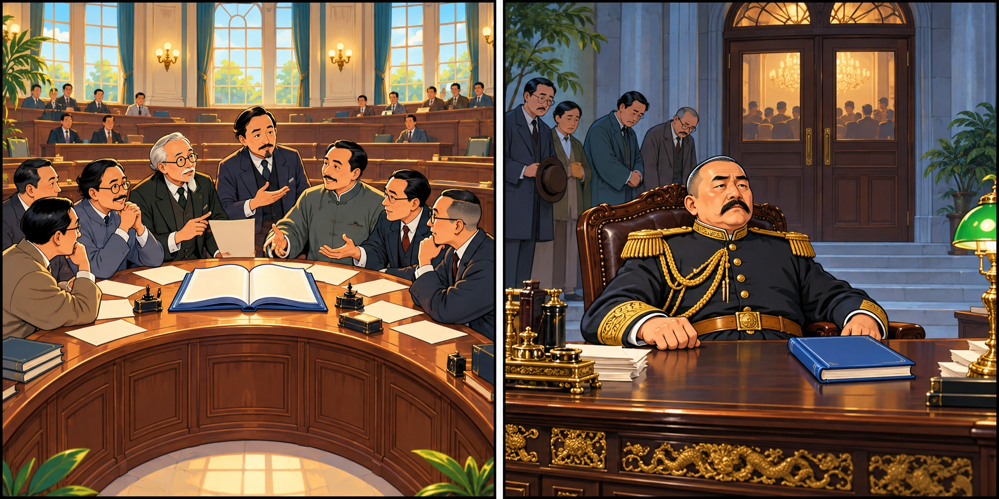
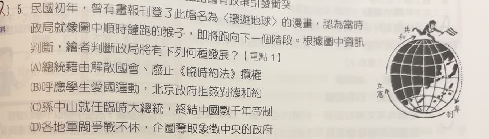

分享原卷｜第 5 題
完整原題

民國初年，曾有畫報刊登了此幅名為〈環遊地球〉的漫畫，認為當時政局就像圖中順時鐘跑的猴子，即將跑向下一個階段。根據圖中資訊判斷，繪者判斷政局將有下列何種發展？
(A) 總統藉由解散國會、廢止《臨時約法》擴權
(B) 呼應學生愛國運動，北京政府拒簽對德和約
(C) 孫中山就任臨時大總統，終結中國數千年帝制
(D) 各地軍閥爭戰不休，企圖奪取象徵中央的政府
先想一想，再查看答案、解說與原圖
原卷作答：原選字母被訂正筆跡遮蓋，未推測
正確答案：A。猴子由共和往專制前進，對應袁世凱削弱國會與約法、擴張個人權力。
逐項解析
| 選項與原句 | 判讀 | 句意與判斷理由 |
|---|---|---|
| (A) 總統藉由解散國會、廢止《臨時約法》擴權 | 應選 | 猴子由共和往專制前進，對應袁世凱削弱國會與約法、擴張個人權力。 |
| (B) 呼應學生愛國運動，北京政府拒簽對德和約 | 不選 | 這是五四運動相關外交事件，沒有直接對應共和走向專制。 |
| (C) 孫中山就任臨時大總統，終結中國數千年帝制 | 不選 | 此項是走向共和的變化，但漫畫問的是已到共和之後的下一階段。 |
| (D) 各地軍閥爭戰不休，企圖奪取象徵中央的政府 | 不選 | 軍閥各方爭權並非圖中最直接的專制擴權概念。 |
詳細說明與解題步驟
一、看位置、方向、下一站
原圖左側寫立憲，上方猴子附近寫共和，右下側寫專制。題目指定順時鐘，所以要從共和往右側下一站專制讀。
二、把圖像轉成政治行為
解散國會，會削弱立法監督；廢止限制總統的《臨時約法》，則有利個人擴權。A最直接說明共和制度遭破壞、走向專制。
三、不要把現在位置當答案
C描述共和政體的建立；圖中的共和已是目前位置，問題問的卻是之後。D雖然也屬民初問題，卻沒有A那麼直接對應專制。
四、專制不必一定稱帝
即使職稱仍為總統，若削弱制度制衡、將權力集中於個人，也可能形成專制。此處是在解讀漫畫的諷刺，並非所有共和國都必然走向專制。

核對註記：已核對題幹、全部選項與必要材料；教材對應課次未確認，歸綜合。
原圖（僅本題）
